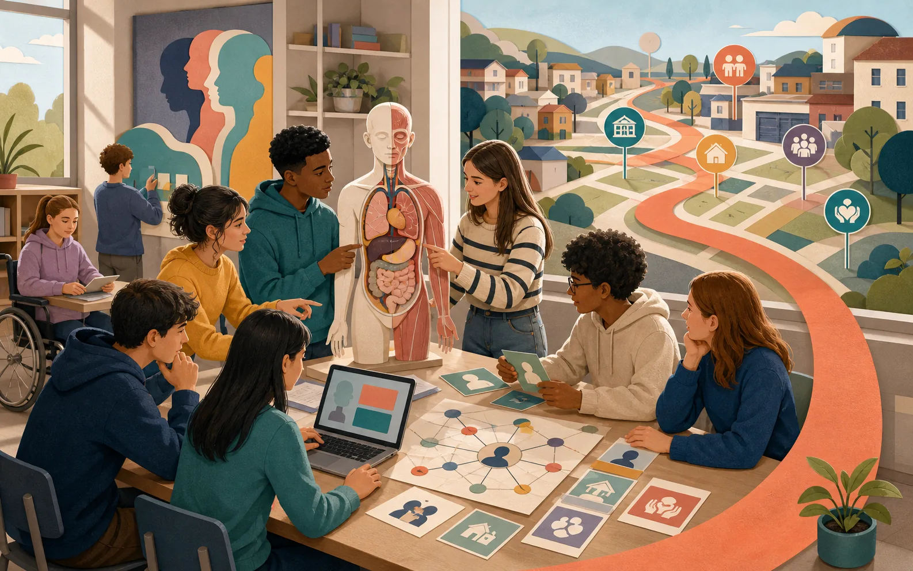
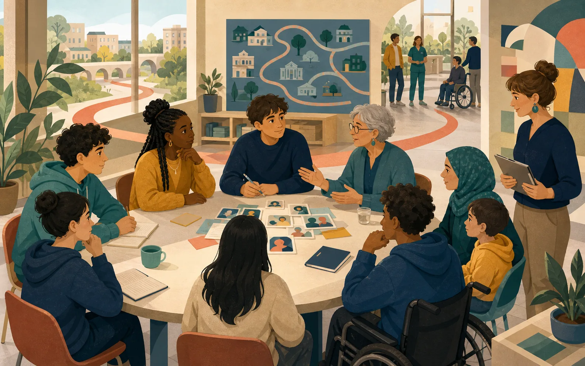
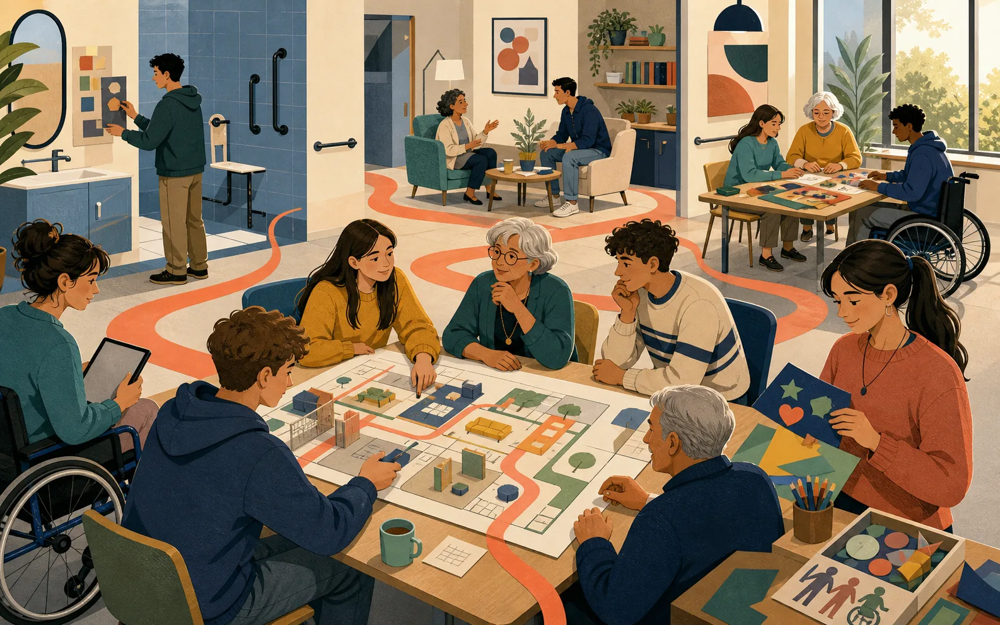
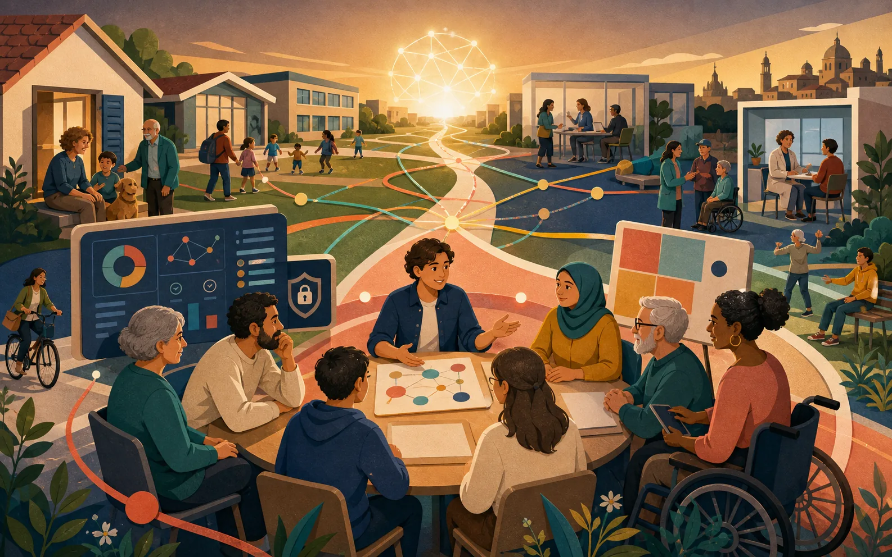

Progettare e lavorare in rete
Servizi, progetti, équipe e responsabilità condivise.
Competenze di indirizzo, ai sensi del Decreto del Ministro dell’istruzione, dell’università e della ricerca 24 maggio 2018, n. 92, Allegato C
Area d’indirizzo · il percorso in quattro tappe
Le conoscenze non restano capitoli separati: anno dopo anno diventano uno sguardo professionale capace di leggere i bisogni, costruire relazioni, progettare interventi e valutarne gli esiti.
Segui il filo color corallo: accompagna lo studente dall’aula alla rete dei servizi.

Biennio · costruire le fondamenta
L’alunno incontra il benessere come equilibrio tra corpo, mente e relazioni. Impara a riconoscere bisogni diversi lungo il ciclo di vita, a leggere la rete dei servizi e a trattare informazioni e dati con attenzione.
Competenze in avvio 1–4, 6–8 e 10

Terzo anno · entrare nella relazione
Protocolli, servizi e bisogni prendono la forma di casi e situazioni. L’alunno riconosce ruoli e responsabilità, sperimenta il colloquio, adatta la comunicazione e collabora alla lettura della domanda.
Il quadro si completa entrano in gioco tutte le 10 competenze

Quarto anno · progettare con la persona
L’alunno approfondisce disabilità, invecchiamento, fragilità e presa in carico. Impara a contribuire a un progetto personalizzato, sostenere le capacità residue e predisporre attività e ambienti accessibili, sicuri e significativi.
Le competenze si integrano cura, progetto, tutela e documentazione dialogano

Quinto anno · agire e valutare
Le competenze maturate convergono: l’alunno collabora alla gestione degli interventi, orienta ai servizi, comunica con persone e gruppi, documenta il lavoro e usa i dati per monitorare qualità ed esiti.
Traguardo agire con autonomia proporzionata, responsabilità e metodo
Il punto d’arrivo
Il diplomato SSAS possiede competenze per co-progettare, organizzare e attuare interventi rivolti a persone, gruppi e comunità, promuovendo benessere bio-psico-sociale, assistenza, salute, socializzazione e integrazione. Accompagna la persona nel progetto personalizzato coinvolgendo utente, famiglia, équipe e territorio.
Profilo ufficiale · Allegato 2-I ↗Servizi, progetti, équipe e responsabilità condivise.
Relazione, mediazione e accesso consapevole ai servizi.
Bisogni di base, presa in carico, ambienti sicuri.
Animazione, inclusione, prevenzione e qualità della vita.
Dati affidabili, monitoraggio, valutazione e qualità.
Dal racconto ai dati. Questa è una sintesi narrativa del curricolo d’istituto. Competenze intermedie, abilità, conoscenze e insegnamenti restano consultabili e filtrabili nelle schede analitiche qui sotto.
Vai alle schede del curricolo ↓Scorri orizzontalmente per vedere tutte le colonne →
| Insegnamento | Competenze | Conoscenze | Periodi | Schede coinvolte | Carico Didattico |
|---|